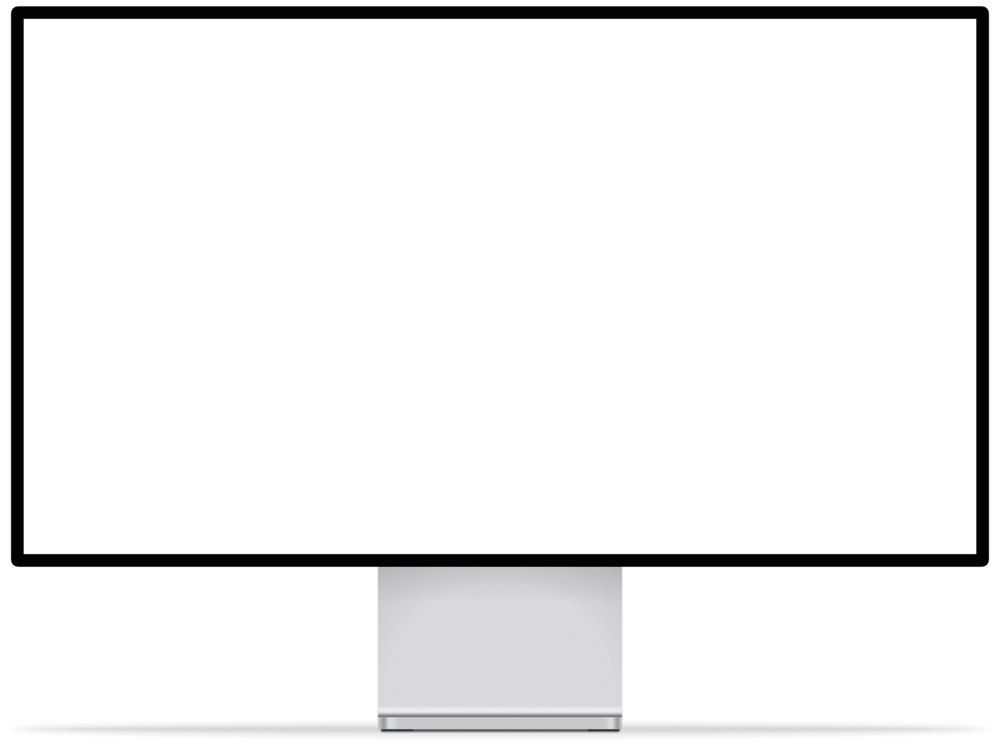
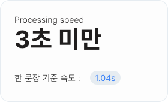
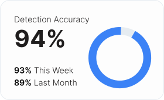
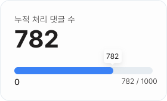

Re:Fine
‘refine: 개선하다’와 ‘reply: 답하다’
이 두 단어를 합쳐 더 나은 댓글 생태계, 인터넷 환경을 만들어 나가자는 의미를 담았습니다.
저희 Re:Fine은 온라인 댓글 속 언어를 인공지능이 실시간으로 분석하여 악성 댓글을 감지하고, 순화된 표현으로 대체하거나 표시해주는 브라우저 확장 프로그램입니다.
단순한 필터링을 넘어, 언어의 맥락과 감정을 이해하는 AI가 건강한 소통 문화를 만들어 갑니다.
사용 가이드
악성 댓글 필터링 확장 프로그램의 주요 기능과 사용 방법을 안내합니다.
누구나 쉽고 빠르게 댓글을 정제하고 긍정적인 온라인 환경을 만들어 보세요.



1. 댓글 자동 감지
웹 페이지가 열리면 시스템이 댓글 영역을 자동으로 인식합니다. 댓글 내용을 실시간으로 탐지하고 분석합니다.
2. 댓글 분석 및 판별
AI 모델이 댓글의 감정과 문맥을 함께 분석하여 악성 댓글을 탐지합니다. 분석 결과는 [순화된 댓글입니다]라는 표시와 함께 확인할 수 있습니다.
3. 댓글 순화 및 원문 보기
사용자는 ‘원본’ 버튼을 눌러 원본 댓글도 함께 확인할 수 있습니다. '순화' 버튼을 누르면 다시 순화 댓글이 나타납니다.
왜 순화됐나요?
Re:Fine은 아래와 같은 기준으로 필터링 및 순화를 진행하고 있어요.
더 나은 인터넷 환경을 위해 사용자의 의견을 적극 수용하겠습니다.
욕설 및 비속어
직접적인 욕설, 비속어, 은어 등을 포함하는 댓글
혐오 및 차별 발언
특정 집단에 대한 차별, 편견, 증오를 조장하는 발언
조롱 및 비난성 발언
인신공격, 조롱, 과도한 비난으로 상대방을 모욕하는 표현
위 기준은 일반적인 가이드라인이며, 상황에 따라 다르게 적용될 수 있습니다.
Re:fine은 단순한 키워드 필터링이 아닌,
AI 학습 기반의 감정 분석과 혐오 발언 판별 모델을 통해 댓글의 맥락을 종합적으로 해석합니다.
이를 바탕으로 긍정·부정 감정과 혐오 여부를 함께 분석하여 필터링이 필요한 문장을 정교하게 판단합니다.
처리 속도

정확도

처리 댓글 수
